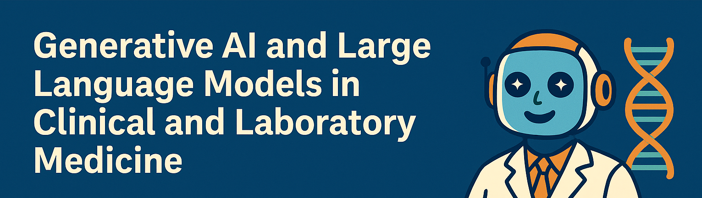
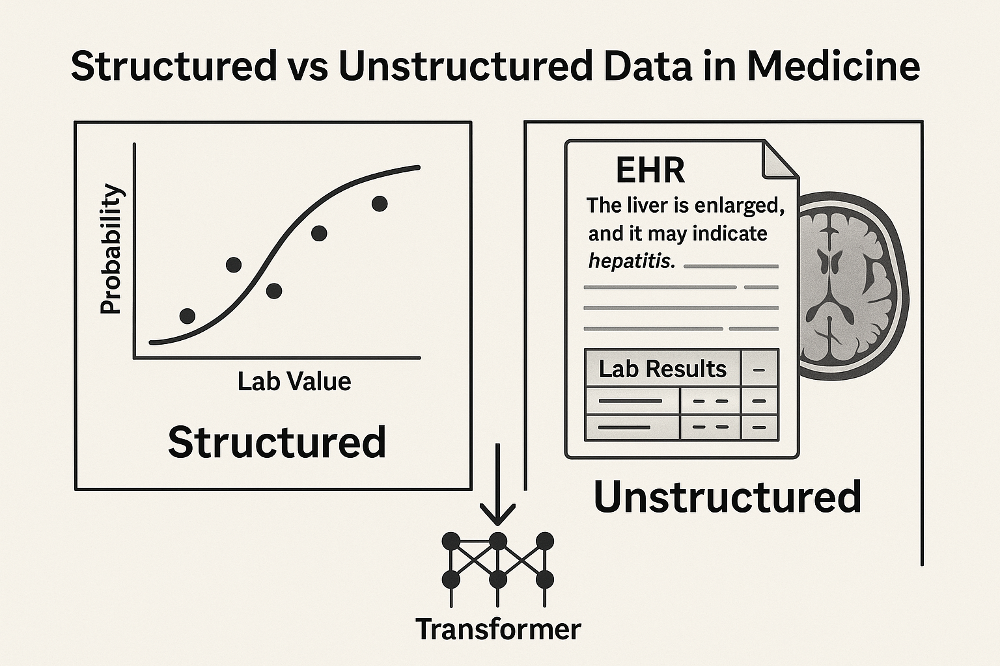
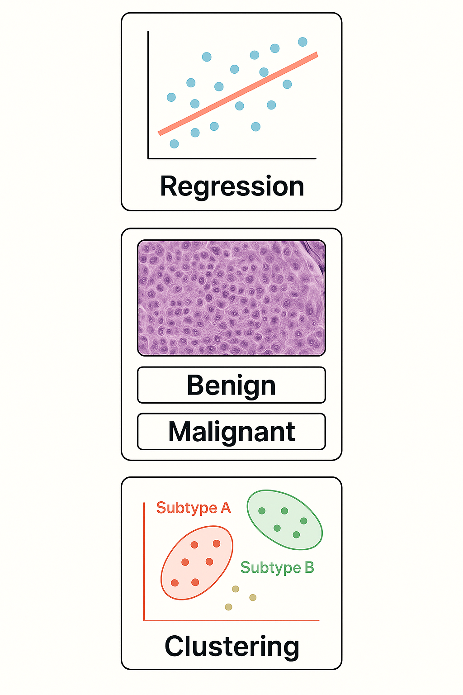
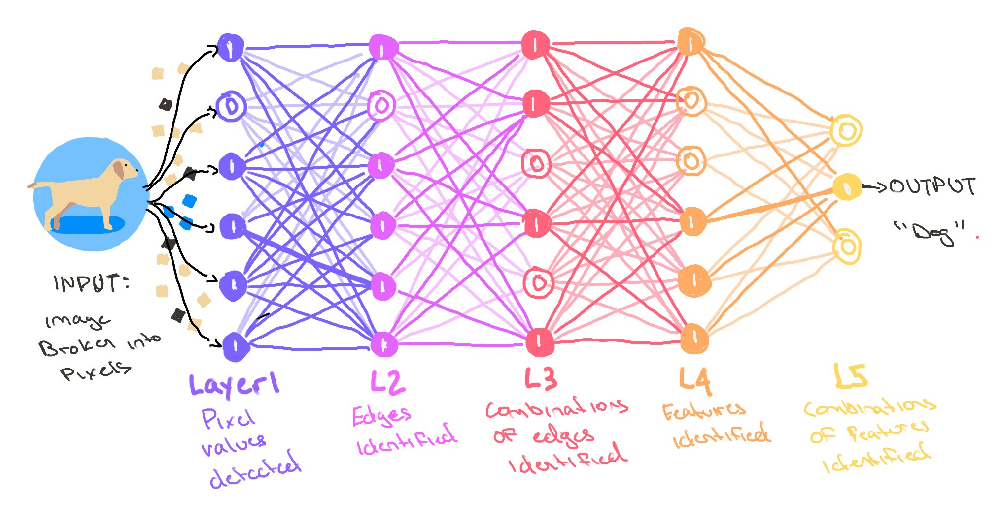
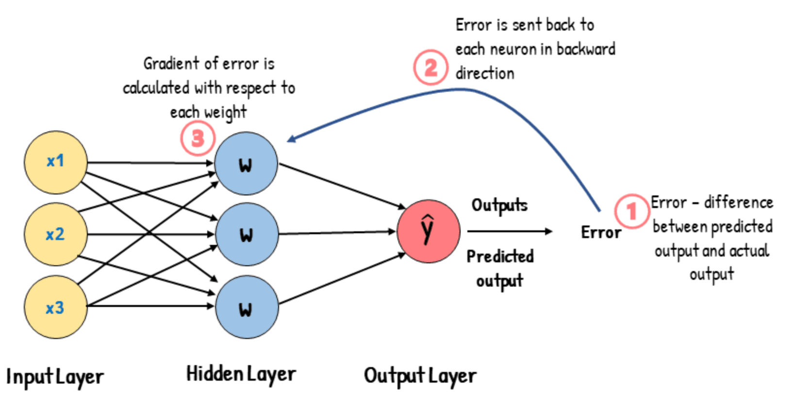
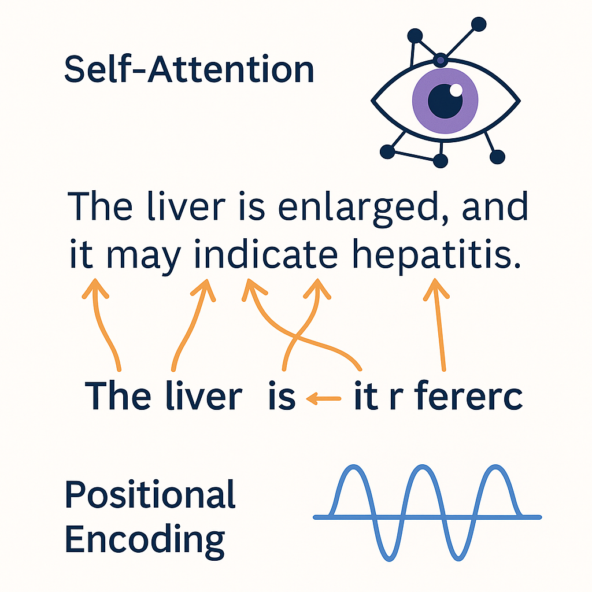

Generative AI and LLMs in Clinical and Laboratory Medicine

Generative AI and LLMs
in Clinical and Laboratory Medicine
- What is Generative AI and how is it transforming medicine?
- Why focus on Large Language Models (LLMs)?
- Key goals of the course:
- 🧠 Understand the fundamentals of generative AI and LLMs
- 🧪 Explore applications in clinical and lab settings
- 🔄 Compare local vs commercial tools (ChatGPT, Claude, Mistral, etc.)
- 🛠 Practice with LM Studio, WebLLM
- 🧠 Understand the fundamentals of generative AI and LLMs
- Course format: 2h theory + 2h practical
What is Artificial Intelligence?
(And why doctors and biologists should care)
- 🧠 Artificial Intelligence (AI) simulates human reasoning and decision-making
- 🤖 Two historical approaches:
- Symbolic AI = rule-based logic (e.g., expert systems)
- Connectionist AI = inspired by the brain (neural networks)
- Symbolic AI = rule-based logic (e.g., expert systems)
- 📊 Statistical Learning forms the bridge:
- Data-driven techniques to learn patterns from data
- Includes regression, classification, and clustering
- Data-driven techniques to learn patterns from data
- 🧬 Why it matters in medicine:
- Many clinical tasks are decision problems under uncertainty
- From diagnosis to triage to interpretation of lab results
- AI = help, not replacement
- Many clinical tasks are decision problems under uncertainty
Why Do We Need a New AI in Medicine?
Limitations of classical statistical models
- 📊 Classical models (regression, decision trees, etc.) work well with structured, tabular data
- 🧬 But clinical data is increasingly unstructured and complex:
- Free-text reports, multi-language notes, EHRs, medical images
- Free-text reports, multi-language notes, EHRs, medical images
- ❌ Statistical models struggle with:
- Language ambiguity (e.g., “it” → “the liver”?)
- Missing or noisy data
- Context-dependent reasoning
- Language ambiguity (e.g., “it” → “the liver”?)
- 🧠 Modern AI (LLMs) can handle this complexity with better generalization on free-text and multimodal data
Why Do We Need a New AI in Medicine?
Limitations of classical statistical models

What Can Traditional AI Do?
Core Tasks in Statistical Learning
- 📈 Regression: Predict a number from input data
- Example: Predict blood glucose from age + BMI
- Example: Predict blood glucose from age + BMI
- 🧪 Classification: Assign a label to input data
- Example: “Is this biopsy malignant or benign?”
- Example: “Is this biopsy malignant or benign?”
- 🔍 Clustering: Find hidden groups in unlabeled data
- Example: Identify subtypes of patients with similar gene expression

Why Statistical Models Struggle with Language
From structured input to real-world complexity
- 🧱 Traditional models expect structured, tabular input
- 💬 Natural language is unstructured, ambiguous, context-dependent
- Example: “It is elevated” — what is “it”?
- 🧠 Language understanding needs:
- Context resolution (e.g., coreference)
- Syntax and semantics
- Long-range dependencies across sentences
- 📉 Statistical models lack memory or reasoning — they reduce text to bags of words or fixed vectors
What Is a Neural Network?
From neurons to layers to learning
- 🔢 Neural networks are made of units (“neurons”) connected in layers
- 🧠 Each neuron takes input → does a small math operation → passes output forward
- 📚 By adjusting weights during training, the network learns patterns
- 🧬 This structure lets it capture non-linear relationships (vs classical regression)

How Do Neural Networks Learn?
The role of loss and backpropagation
- 🧪 During training, the network makes a prediction
- 📉 A loss function compares the prediction to the true label
- 🔁 Backpropagation adjusts the weights to reduce error
- 🔄 This is repeated over many examples → the model learns patterns

Why Standard Neural Networks Struggle with Language
The need for sequential memory and attention
- 🔁 Standard networks treat inputs as fixed-length vectors
- 📜 But language is a sequence — word order and context matter
- 🧠 Early models like RNNs and LSTM were designed to process sequences
- They use memory to retain previous words
- They use memory to retain previous words
- 😕 Still limited: hard to capture long-range dependencies (“it” referring 3–4 sentences back)
From Deep Learning to LLMs
Why Transformers changed everything
- 🧠 Deep Learning = layered neural networks
- 🧱 Types of architectures:
- MLP: good for simple inputs
- CNN: excels in images and spatial data
- RNN: handles sequences like speech and text
- MLP: good for simple inputs
- ⚡ Transformer: breakthrough architecture for language
- Uses self-attention instead of recurrence
- Faster, more parallel, better at long sequences
- Uses self-attention instead of recurrence
- 🔁 Pretraining + Fine-tuning: strategy behind ChatGPT, Claude, Mistral
Inside the Transformer
Self-Attention and Positional Encoding
- 👁️ Self-Attention: lets the model look at all words in a sentence at once
- Each word can “attend” to other words — capturing context and meaning
- Example: in “The liver is enlarged, and it may indicate…”, what does “it” refer to?
- Each word can “attend” to other words — capturing context and meaning
- 🧭 Positional Encoding: adds order to the sequence
- Transformers process input in parallel, so positions must be encoded explicitly
- Transformers process input in parallel, so positions must be encoded explicitly
- 🔍 These are what let LLMs handle long-range dependencies in language
- 🧠 Basis for ChatGPT, BERT, and every modern LLM

General vs Medical-Specific Language Models
What’s the difference and why it matters in clinical practice?
- 🌍 General LLMs (e.g. ChatGPT, Claude, Mistral):
- Trained on broad internet data
- Good for reasoning, summarization, and multitasking
- Risk of hallucinations and lack of domain depth
- 🩺 Medical-specific LLMs (e.g. PathChat, BrainGPT, LiVersa):
- Trained on clinical texts, guidelines, scientific papers
- Better terminology, contextual accuracy, and safety
- Often closed models or institution-specific
- ⚖️ Trade-off: generality vs depth, availability vs reliability